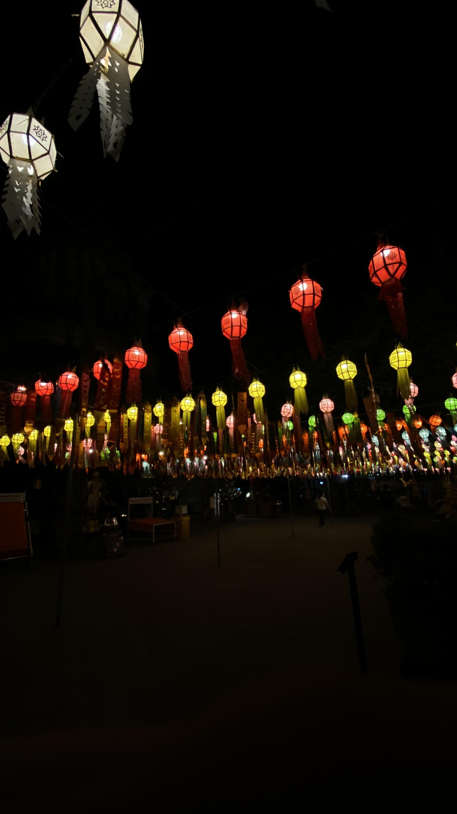
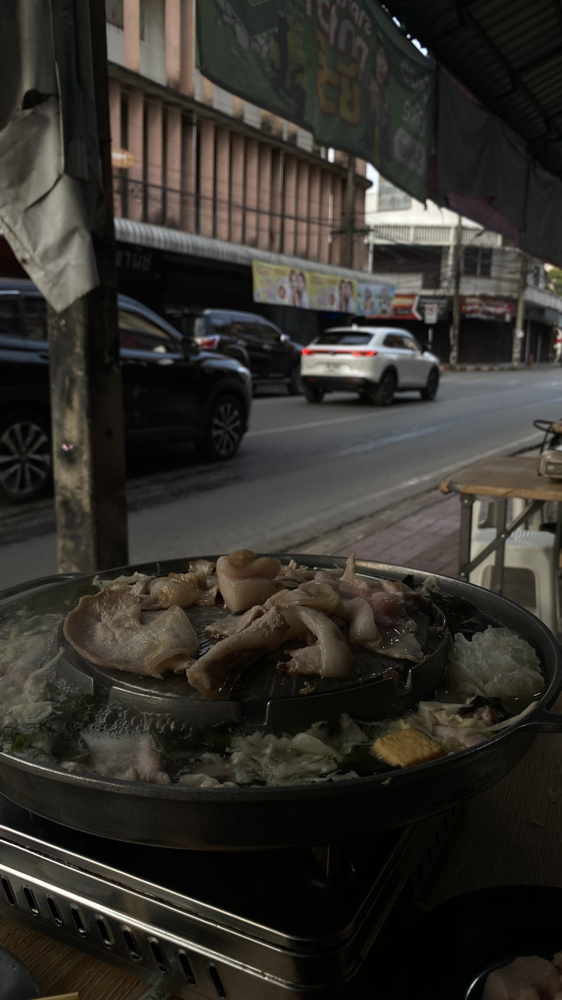
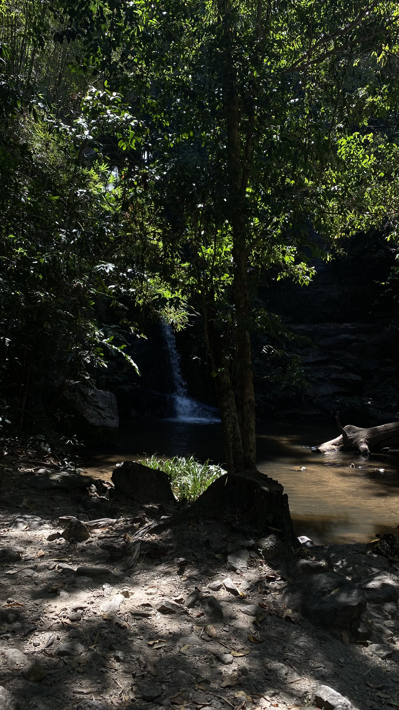
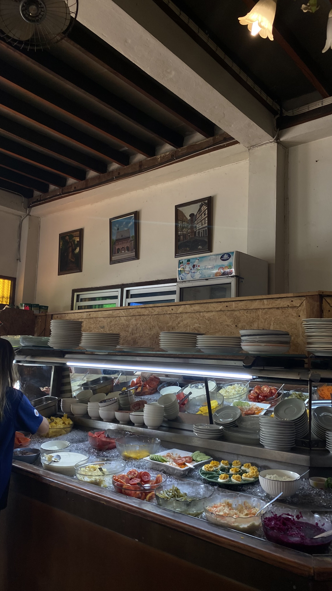
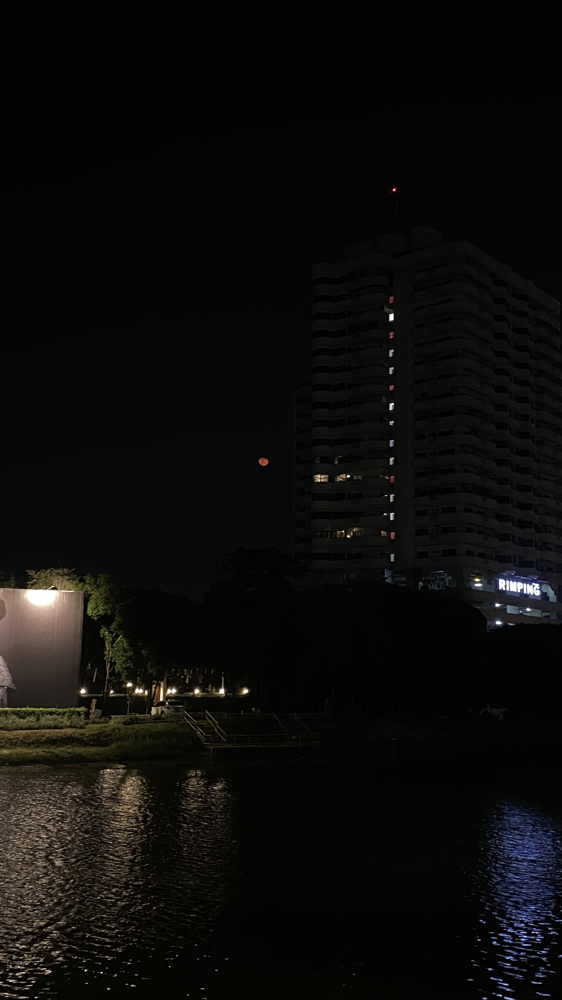
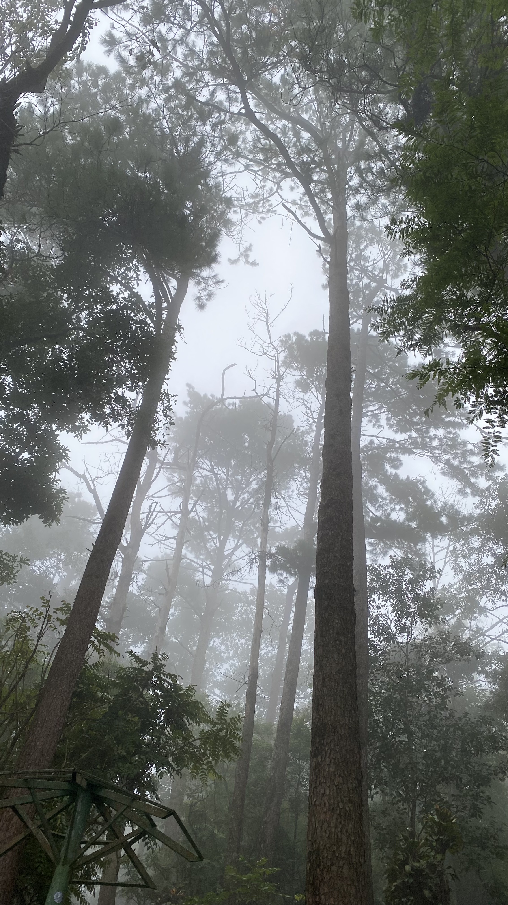
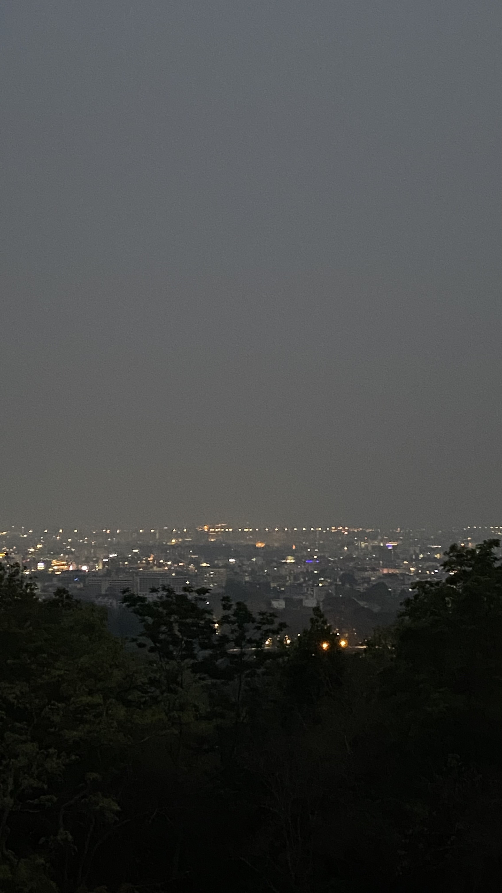

Gallery

งานแขวนโคมของวัดโลกโมฬี เป็นช่วงที่มีโคมมาแขวนและสวยงามมากๆ

หมูกระทะช้างม่อย เป็นร้านที่อยู่ในละเวกของเมืองเก่า ให้ความคลาสสิคของเมืองเก่า บรรยากาศดี

เป็นน้ำตกที่สวยมาก บรรยากาศค่อยข้างดี เย็นสบาย สามารถลงเล่นน้ำได้

สลัดบาร์ ของร้านอาหารเยอรมัน มีของทานให้เลือกได้อย่างหลากหลาย

ยามค่ำคืน ริมแม่น้ำปิง ผมชอบรูปนี้มากๆมันทำให้ผมได้คิดอะไรช้าลงมากขึ้น

เริ่มเข้าสู่ช่วงหน้าฝน หลังจากฝนตก2-3 ก็ได้ขึ้นดอยไปรับบรรยากาศ มีหมอกหนาและอากาศเย็นมาก

เป็นช่วงที่เชียงใหม่มีปัญหาทางด้าน pm2.5 เลยทำให้ทิวทัศน์มีแต่หมอกควัน
© 2025 Jarkrasri.com by Jarkrasri Thonglueng